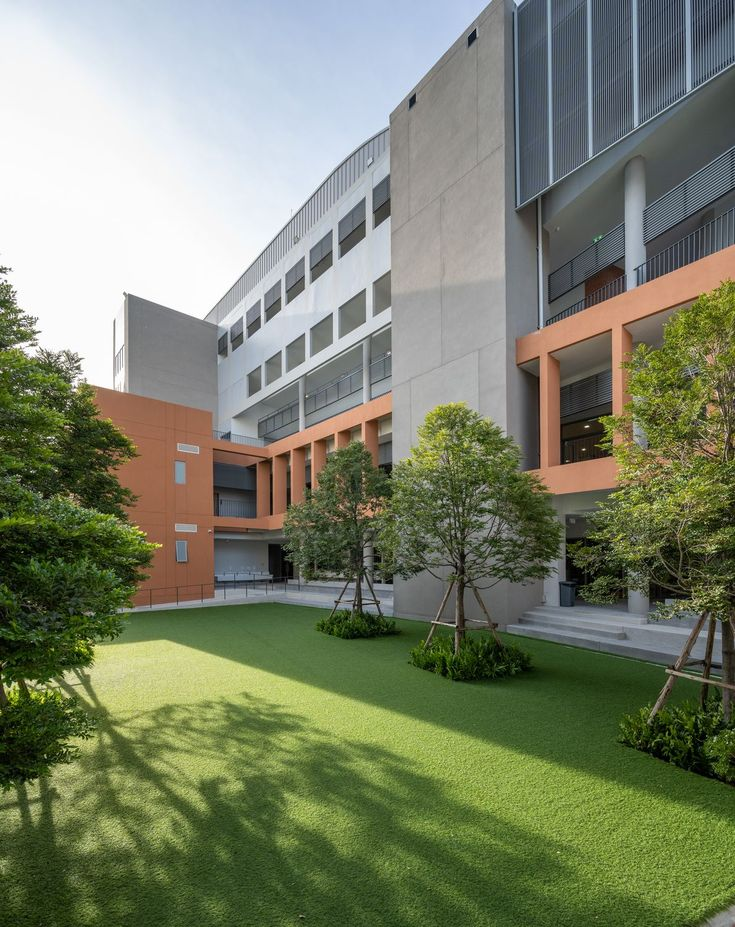

Resources
We have libraries that provide access to a wide range of books, scholarly journals, research papers, and digital resources. Libraries often have dedicated sections for computer science and related disciplines
offering resources for research, study, and reference purposes. The department typically has computer labs equipped with high-performance computers, specialized software, and tools necessary for computer science research and coursework.
These facilities provide students and researchers with access to the computing resources they need to conduct experiments, develop software, and analyze data.
The department has dedicated research centers and institutes focused on specific areas of computer science. These centers bring together faculty members,researchers, and students with shared research interests, facilitating collaboration, funding opportunities, and resources specific to those research areas.
We often provide technical support services to assist with computer hardware, software, network connectivity, and other technical issues.
The resources and facilities provided by the computer science department aim to support teaching,
research, collaboration, and innovation within the field of computer science.
Computer labs are equipped with computers, software, and network infrastructure necessary for coursework, programming assignments, and research.
These labs often have specialized software tools and development environments relevant to computer science disciplines.
Research labs provide dedicated spaces for faculty members and graduate students to conduct research in specific areas of computer science.
These labs are equipped with advanced hardware, specialized software, and experimental setups required for research projects.
Some computer science departments have access to high-performance computing resources.These resources consist of powerful servers and
clusters that can handle computationally intensive tasks such as large-scale data analysis, simulations, and modeling.
